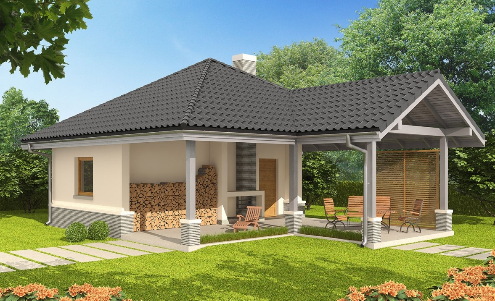
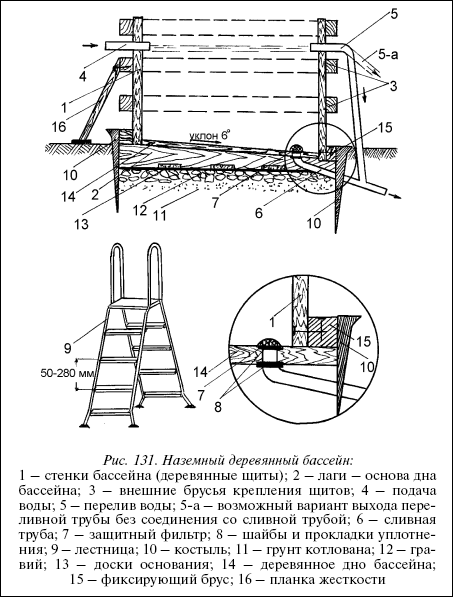

Наземный бассейн.

Если по каким-либо причинам невозможно строительство вкопанного (полувкопанного) бассейна, остается возможность построить наземный бассейн.
Для принятия такого решения могут быть самые различные основания: твердый скальный грунт, неподходящий рельеф участка, маленькие дети и домашние животные, которые могут забраться во вкопанный (полувкопанный) бассейн, общий архитектурный план дома и т. д.
ПодготовкаПрежде всего, как и в предыдущих случаях, определяется площадка. Конечно, речь не может идти о большом бассейне или о бассейне для прыжков. Это обычно детский бассейн или бассейн для взрослых глубиной 105–144 см. Самый подходящий строительный материал в данном случае – дерево. Такой бассейн может быть собран, снова разобран, перенесен в другое место и там собран.

Рис. 131. Наземный деревянный бассейн:
1 – стенки бассейна (деревянные щиты); 2 – лаги – основа дна бассейна; 3 – внешние брусья крепления щитов; 4 – подача воды; 5 – перелив воды; 5-а – возможный вариант выхода переливной трубы без соединения со сливной трубой; 6 – сливная труба; 7 – защитный фильтр; 8 – шайбы и прокладки уплотнения; 9 – лестница; 10 – костыль; 11 – грунт котлована; 12 – гравий; 13 – доски основания; 14 – деревянное дно бассейна; 15 – фиксирующий брус; 16 – планка жесткости
Прежде всего необходимо подготовить площадку под такой бассейн. Для этого выбранный участок углубляется на 20 см, разравнивается, засыпается на 6 см гравием (или промытым песком) и щебнем не менее 10 см. Сверху кладется рубероид (толь), на который уже укладываются лаги, которые являются основой для деревянного пола бассейна. Каждый лаг 2 будет жестко крепиться к металлическому костылю 10, который забивается у кромки лага на 50 см в грунт. Когда лаги будут зафиксированы, на них настилается деревянный пол 14 бассейна. Требования к пригонке досок друг к другу уже известны. Предварительно доски должны быть хорошо загрунтованы и покрыты эмаль-краской или лаком. Забиваемые в доски гвозди должны быть утоплены добойником. Крепление щитов (стенки бассейна) к основанию (дну) производить с помощью брусьев 15 (показано на фрагменте).
В зависимости от рельефа местности, где выбрана площадка под бассейн, надо определить, где будет сливная труба 6. Крепление сливной трубы, трубы перелива 5, трубы подачи воды 4 подробно было дано на рисунке 122.Приемы покрытия чаши бассейна ПВХ-пленкой и ее закрепления нами подробно описаны выше. Стены бассейна (щиты) снаружи стянуты брусьями 3 в три ряда. К среднему брусу 3 могут крепиться распорки 16 для придания большей жесткости конструкции бассейна.